[NSSCTF 2025 秋招赛] CodeRunner
文章目录13 个章节
题目信息
题目名称: [NSSCTF 2025 秋招赛] CodeRunner
类型: Reverse Engineering
难度: 困难
解题过程
第一步：文件分析
Unity3D 程序，解压后发现是 IL2CPP 后端（不是 Mono）。
第二步：脱壳处理
发现 GameAssembly.dll 被 UPX 加壳且文件头被修改。用 010 Editor 修复文件头后脱壳。
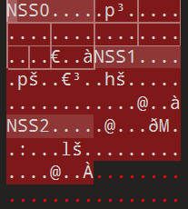
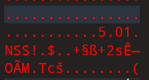
第三步：IL2CPP 反编译
使用 IL2cppDumper 从二进制文件中提取类型和方法信息。
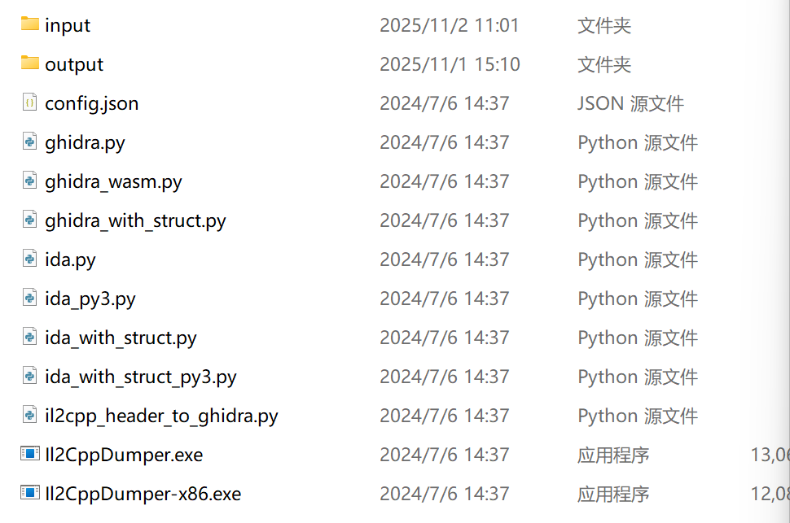
第四步：代码反编译
使用 dnSpy 反编译 .NET 代码。
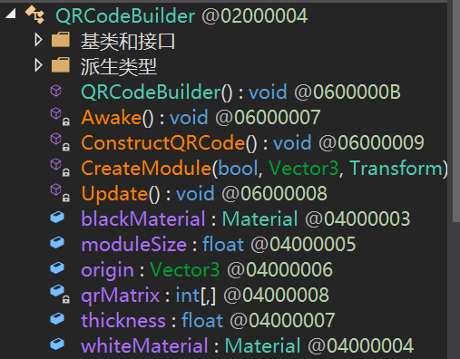
第五步：关键函数定位
借助 IDA 与 IL2cppDumper 脚本，定位 QRCodeBuilder 类找到二维码生成逻辑。
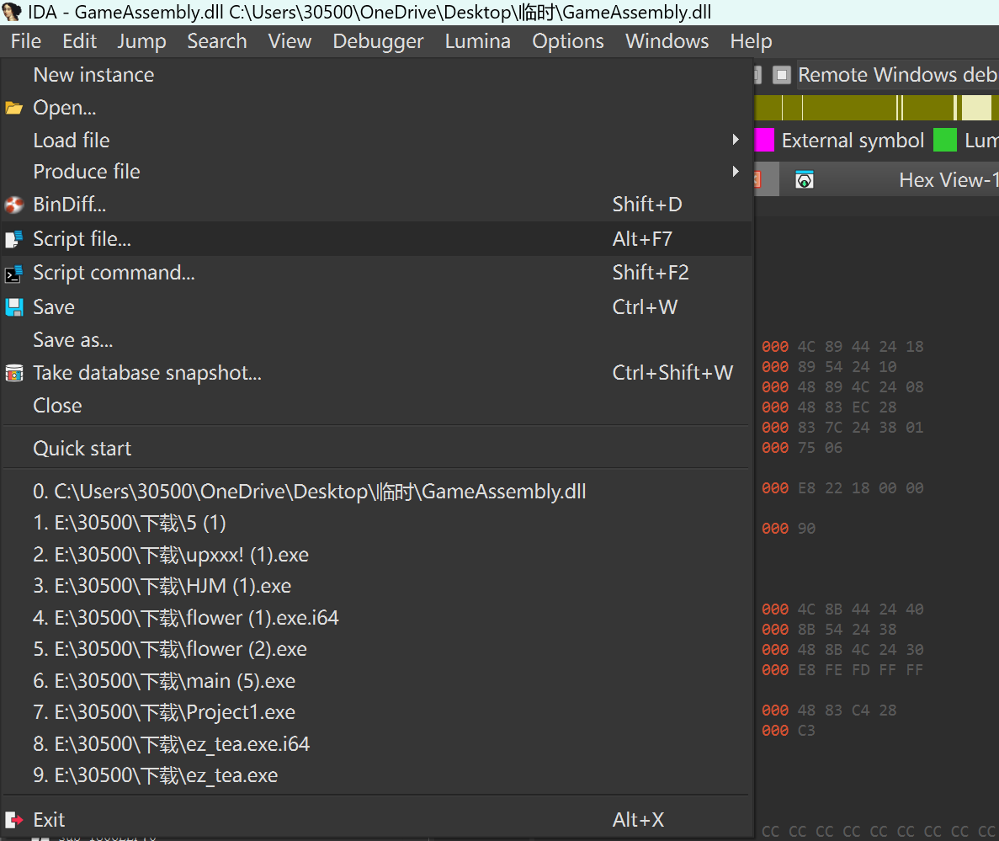
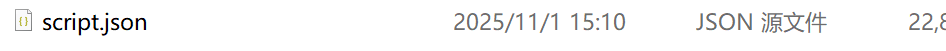
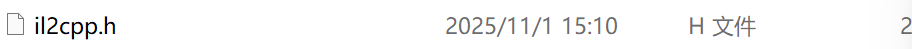
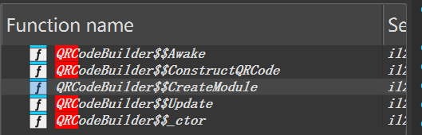
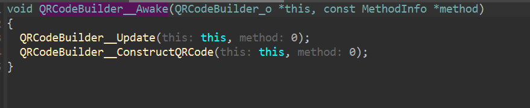
第六步：动态调试
分析代码发现程序会根据 qrMatrix 动态生成二维码。需要动态调试获取矩阵数据。
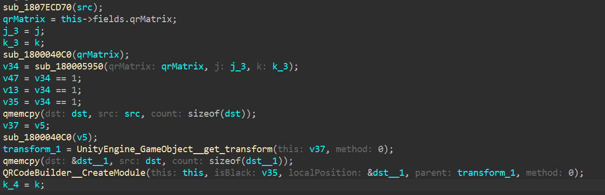
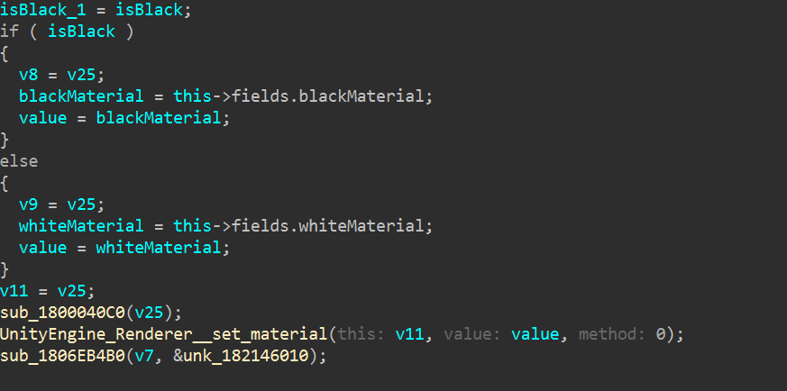
第七步：绕过反调试
程序有反调试保护，调用了 WinAPI_DetectDebugger。patch 该函数为直接返回，绕过检测。
第八步：获取矩阵数据
在 Unity 程序中下断点，获取 this 指针，通过偏移量找到 qrMatrix 的地址，提取矩阵数据。
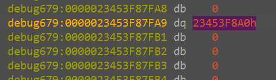
第九步：生成二维码
使用提取的矩阵数据，编写脚本生成二维码图片：
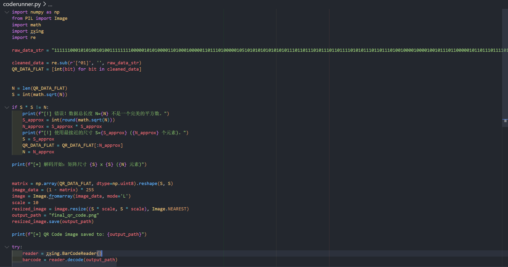
1 | # 二维码生成脚本 |
总结
题目六:CodeRunner（简要回顾）
- 确认为 IL2CPP 后端 → IL2cppDumper 导出元数据。
- 修头 + UPX 脱壳后，配合 IDA 脚本定位
QRCodeBuilder。 - 绕过反调试，获取
this，按 offset 0x48 取出qrMatrix。 - 脚本生成二维码，得到 flag。
为避免重复展示，回顾部分不再嵌入截图；全部详细截图见上文“解题过程”。